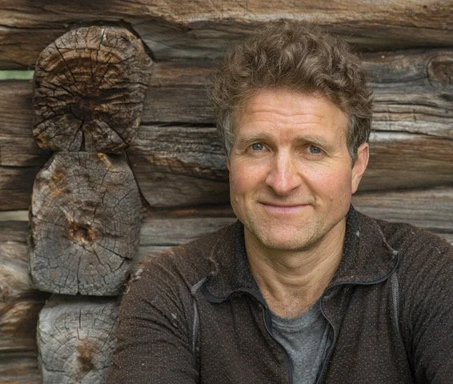
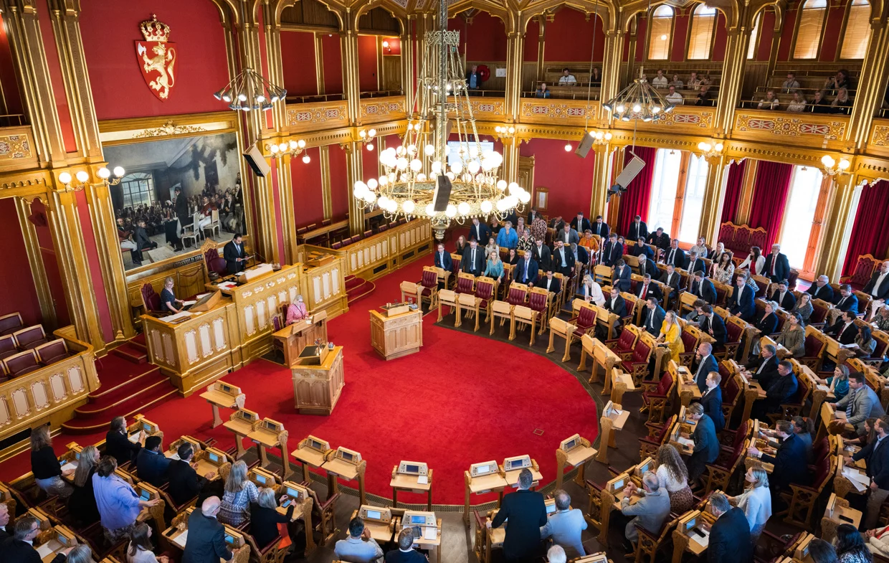
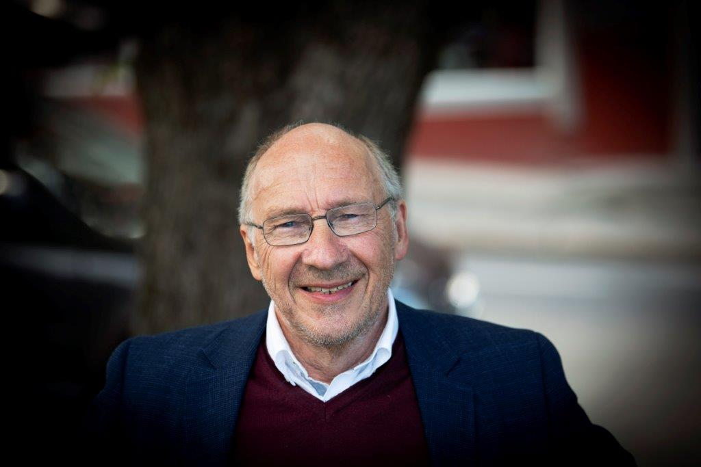
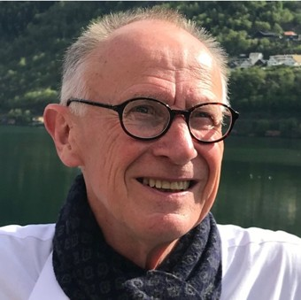
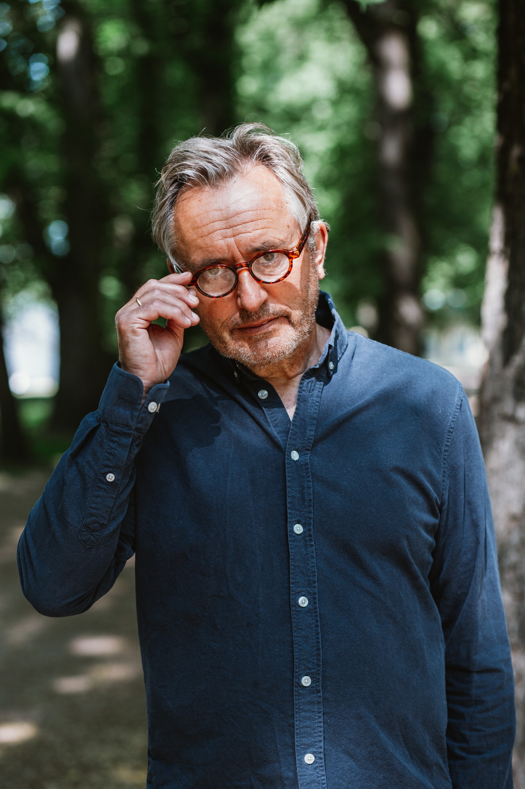
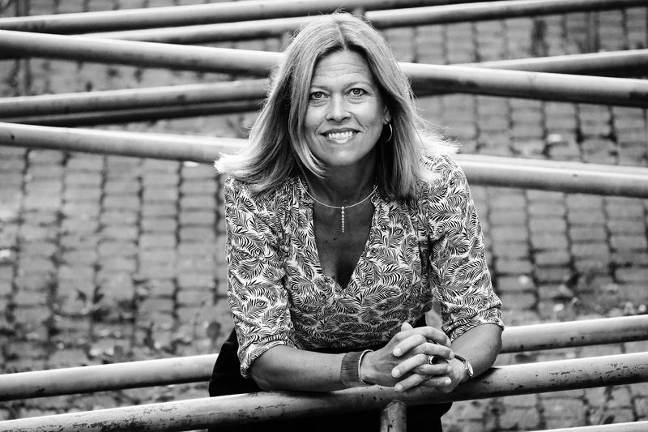

Program høsten 2026
Vi har et variert vår- og høstprogram av personer med viktige stemmer og engasjerende budskap. Eventuelle endringer i programmet blir markert i rødt.

Thor Gotaas 25. august
Koieliv og eneboere i skogen
Folkeminnegransker og forfatter Thor Gotaas forteller hvorfor noen velger ensomheten i ei lita koie.
Mona Ringvej 1. september
Norge - et demokrati
Når ble Norge et demokrati, og hva er avgjørende for å bevare det? Mona Ringvej, historiker og forfatter, gir svar og perspektiver.


Geir O. Pedersen 15. september
Israel-Palestina, Libanon, Syria, Iran. Evig krig?
Geir O. Pedersen, tidligere norsk FN-ambassadør og FNs spesialutsending i Syria og Midtøsten, gir et skarpt og oppdatert bilde av situasjonen i Midtøsten. Den videre utviklingen frem mot september vil ha stor betydning for hvilke temaer som står sentralt i foredraget.
Inge Eidsvåg 6. oktober
Aldringens forunderligheter, vemod og gleder
Men livet lever! Inge Eidsvåg, tidligere rektor ved Nansenskolen, forfatter og kåsør, gir et varmt og tankevekkende møte med aldringens forunderligheter


Stein Reegård 20. oktober
EU som økonomisk stormakt - og Norges rolle i et nytt maktbilde
EU er Norges viktigste handelspartner. EU er under press utenfra og innenfra. Men aldri før har flere eu-borgere støttet opp om medlemskapet i unionen, til tross for nord-sør og øst-vest konflikter, der blant annet marked står mot stat, og stat står mot marked. Vi trenger å bli bedre kjent med EU. Hva er EUs sjel?
Til å si noe om dette har vi Stein Reegård, tidligere statssekretær og sjeføkonom i LO, til å gi innsikt i de store økonomiske linjene og hva de betyr for Norge.
Her er noen problemstillinger:
- Blir EUs indre marked en vekstmotor som står seg økonomisk mot Kina og USA? Hvilken rolle kan Norge spille i dette bildet?
- Får Draghi gjennomslag for et mer amerikansk finansmarked?
- Etter avklaringen med Island, gjenstår fortsatt mye spenning om både hva EU, Canada, Brexit, Sveits, Ukraina og andre mer østlige land blir til framover.
- Og hva med f. eks. norske tog når de konkurranseutsettes?
- Og ikke minst hva med norske strømpriser?
Helge Simonnes 3. november
Er høyrenasjonalismen på retur i verden?
Tirsdag er det mellomvalg i USA, og det er knyttet stor spenning til om Donald Trump mister flertallet i Kongressen og blir en såkalt lame duck. Siste halve året har han fått mange kilevinker. Viktor Orban tapte i Ungarn i april etter 16 år ved makten. Ved valget i Serbia slo studentlisten knock out på Putin-sympatisøren Aleksandar Vucics. I verdens femte største land Brasil tapte Bolsonaro jr. mot Lula og har nå rømt til USA. I Israel er situasjonen etter valget uavklart. Sittende statsminister Bibi Netanyahu fikk lavere oppslutning til tross for sterk støtte fra Trump og besøk av Pete Hegseth.
Helge Simonnes er tidligere journalist, sjefsredaktør i Vårt Land. Han har skrevet flere bøker om politiske og samfunnsmessige spørsmål, og har hatt ulike verv innen mediebransjen.


Benedicte Bull 17. november
Nytt stormaktsspill i Latin-Amerika
Røverimperialismen: Med Trump på tokt i Latin-Amerika. Benedicte Bull, professor i latinamerikastudier, belyser utviklingen.